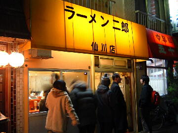
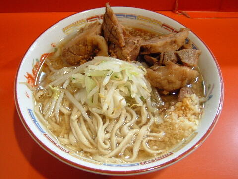

調布市 仙川町 1-10-17
日
17：30〜23：30

ラーメン 700円、豚入りラーメン 800円、豚ダブルラーメン 900円
大盛ラーメン 800円、大盛豚入りラーメン 900円、大ダブルラーメン（鍋二郎） 1000円
麺少なめ 700円
生麺 100円（現金）
店員は、店主とバイト。
黒コショウ（ギャバン）、トウガラシ。
レンゲ無、エコ箸、ティッシュ有、名刺有。
BGMは、無。
トッピングは、本店と同じ。
仙川は食券を買ってから行列に並ぶ。
「ラーメン二郎 仙川」でヤフー検索
「ラーメン二郎 仙川」でヤフーリアルタイム検索
「ラーメン二郎 仙川」でグーグル検索

豚入りラーメン ニンニク
麺は、中太平ストレート。量は二郎標準より少なめ。
ぶたは、この日はハズレ。スジっぽくパサぎみ。当ればフワフワ。
スープは、非乳化タイプで生姜の利いたあっさりタイプ。
ヤサイは、モヤシ8：キャベツ2の割合。少なめなのでヤサイコール推奨。
ニンニクは、細かいすりおろしタイプ。
ＰＣ店